quantmod\[Y = \beta_0 + \beta_1 X_1 + \beta_2 X_2 + \epsilon\]
where \(X_1\) and \(X_2\) are nearly perfectly correlated (co-linear). You can approximate this model by:
\[Y = \beta_0 + (\beta_1 + \beta_2)X_1 + \epsilon\]
The result is: * You will get a good estimate of \(Y\)
* The estimate (of \(Y\)) will be biased
* We may reduce variance in the estimate
It is essentially a tradeoff between reduced variance and biased estimates.
Pros: * Can help with the bias/variance tradeoff when predictors are almost co-linear * Can help with model selection when lasso technique
Cons: * May be computationally demanding on large data sets
* Does not perform as well as random forests and boosting
library(ElemStatLearn); data(prostate)
str(prostate)## 'data.frame': 97 obs. of 10 variables:
## $ lcavol : num -0.58 -0.994 -0.511 -1.204 0.751 ...
## $ lweight: num 2.77 3.32 2.69 3.28 3.43 ...
## $ age : int 50 58 74 58 62 50 64 58 47 63 ...
## $ lbph : num -1.39 -1.39 -1.39 -1.39 -1.39 ...
## $ svi : int 0 0 0 0 0 0 0 0 0 0 ...
## $ lcp : num -1.39 -1.39 -1.39 -1.39 -1.39 ...
## $ gleason: int 6 6 7 6 6 6 6 6 6 6 ...
## $ pgg45 : int 0 0 20 0 0 0 0 0 0 0 ...
## $ lpsa : num -0.431 -0.163 -0.163 -0.163 0.372 ...
## $ train : logi TRUE TRUE TRUE TRUE TRUE TRUE ...# regression subset selection in the prostate dataset
library(ElemStatLearn)
data(prostate)
covnames <- names(prostate[-(9:10)])
y <- prostate$lpsa
x <- prostate[,covnames]
form <- as.formula(paste("lpsa~", paste(covnames, collapse="+"), sep=""))
summary(lm(form, data=prostate[prostate$train,]))##
## Call:
## lm(formula = form, data = prostate[prostate$train, ])
##
## Residuals:
## Min 1Q Median 3Q Max
## -1.64870 -0.34147 -0.05424 0.44941 1.48675
##
## Coefficients:
## Estimate Std. Error t value Pr(>|t|)
## (Intercept) 0.429170 1.553588 0.276 0.78334
## lcavol 0.576543 0.107438 5.366 1.47e-06 ***
## lweight 0.614020 0.223216 2.751 0.00792 **
## age -0.019001 0.013612 -1.396 0.16806
## lbph 0.144848 0.070457 2.056 0.04431 *
## svi 0.737209 0.298555 2.469 0.01651 *
## lcp -0.206324 0.110516 -1.867 0.06697 .
## gleason -0.029503 0.201136 -0.147 0.88389
## pgg45 0.009465 0.005447 1.738 0.08755 .
## ---
## Signif. codes: 0 '***' 0.001 '**' 0.01 '*' 0.05 '.' 0.1 ' ' 1
##
## Residual standard error: 0.7123 on 58 degrees of freedom
## Multiple R-squared: 0.6944, Adjusted R-squared: 0.6522
## F-statistic: 16.47 on 8 and 58 DF, p-value: 2.042e-12set.seed(1)
train.ind <- sample(nrow(prostate), ceiling(nrow(prostate))/2)
y.test <- prostate$lpsa[-train.ind]
x.test <- x[-train.ind,]
y <- prostate$lpsa[train.ind]
x <- x[train.ind,]
p <- length(covnames)
rss <- list()
for (i in 1:p) {
cat(i)
Index <- combn(p,i)
rss[[i]] <- apply(Index, 2, function(is) {
form <- as.formula(paste("y~", paste(covnames[is], collapse="+"), sep=""))
isfit <- lm(form, data=x)
yhat <- predict(isfit)
train.rss <- sum((y - yhat)^2)
yhat <- predict(isfit, newdata=x.test)
test.rss <- sum((y.test - yhat)^2)
c(train.rss, test.rss)
})
}## 12345678plot(1:p, 1:p, type="n", ylim=range(unlist(rss)), xlim=c(0,p), xlab="number of predictors", ylab="residual sum of squares", main="Prostate cancer data")
for (i in 1:p) {
points(rep(i-0.15, ncol(rss[[i]])), rss[[i]][1, ], col="blue")
points(rep(i+0.15, ncol(rss[[i]])), rss[[i]][2, ], col="red")
}
minrss <- sapply(rss, function(x) min(x[1,]))
lines((1:p)-0.15, minrss, col="blue", lwd=1.7)
minrss <- sapply(rss, function(x) min(x[2,]))
lines((1:p)+0.15, minrss, col="red", lwd=1.7)
legend("topright", c("Train", "Test"), col=c("blue", "red"), pch=1)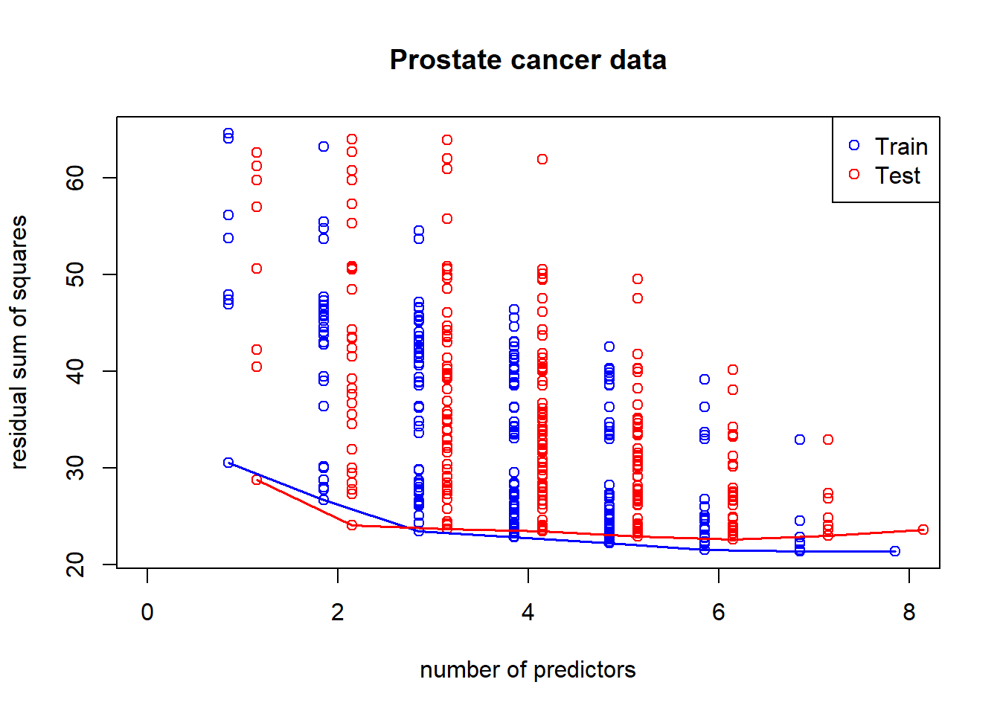
When the predictors are plenty and the observations are not enough, some coefficient estimates will be set to zero in order to carry out the calculation.
The idea is to pick the number of predictor estimates to be zero and then figure out what predictor values should not be made zero. Solve:
In the precense of high collinearity, coefficient estimates tend to be large (a sign of unreliability). We may regularize/shrink the coefficients.
\[ PRSS(\beta) = \sum_{j=1}^n (Y_j - \sum_{i=1}^m \beta_{1i} X_{ij})^2 + P(\lambda; \beta)\]
where \(PRSS\) is a penalized form of the sum of squares. Things that are commonly looked for * Penalty reduces complexity
* Penalty reduces variance
* Penalty respects structure of the problem
\[ \sum_{i=1}^N \left(y_i - \beta_0 + \sum_{j=1}^p x_{ij}\beta_j \right)^2 + \lambda \sum_{j=1}^p \beta_j^2\]
equivalent to solving
\(\sum_{i=1}^N \left(y_i - \beta_0 + \sum_{j=1}^p x_{ij}\beta_j \right)^2\) subject to \(\sum_{j=1}^p \beta_j^2 \leq s\) where \(s\) is inversely proportional to \(\lambda\)
The advantage here is even in high-dimension data that \(X'X\) is not invertible, ridge regression can still be fit by including \(\lambda\).
When \(\lambda\) is zero, we have the OLS estimates. When \(\lambda\) approaches infinity, all the \(\beta s\) will converge to zero.
library(MASS)
lambdas <- seq(0,50,len=10) #10 lambdas that go up in value
M <- length(lambdas)
train.rss <- rep(0,M)
test.rss <- rep(0,M)
betas <- matrix(0,ncol(x), M) #each column to store coefficient estimates for each lambda
#estimation and storing results
for(i in 1:M){
Formula <-as.formula(paste("y~",paste(covnames,collapse="+"),sep="")) #use the full model on all lambdas
fit1 <- lm.ridge(Formula,data=x,lambda=lambdas[i])
betas[,i] <- fit1$coef
scaledX <- sweep(as.matrix(x),2,fit1$xm)
scaledX <- sweep(scaledX,2,fit1$scale,"/")
yhat <- scaledX%*%fit1$coef+fit1$ym
train.rss[i] <- sum((y - yhat)^2)
scaledX <- sweep(as.matrix(x.test),2,fit1$xm)
scaledX <- sweep(scaledX,2,fit1$scale,"/")
yhat <- scaledX%*%fit1$coef+fit1$ym
test.rss[i] <- sum((y.test - yhat)^2)
}
#plots of RSS on the training and test sets, and coefficients
plot(lambdas,test.rss,type="l",col="red",lwd=2,ylab="RSS",ylim=range(train.rss,test.rss))
lines(lambdas,train.rss,col="blue",lwd=2,lty=2)
best.lambda <- lambdas[which.min(test.rss)]
abline(v=best.lambda+1/9)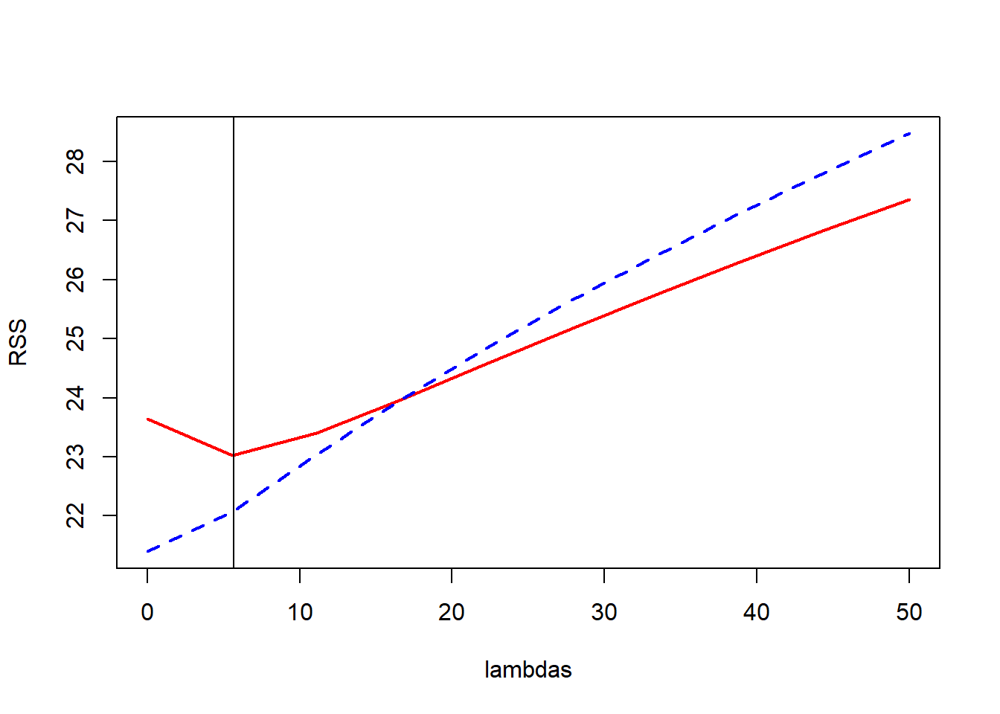
plot(lambdas,betas[1,],ylim=range(betas),type="n",ylab="Coefficients")
for(i in 1:ncol(x))
lines(lambdas,betas[i,],type="b",lty=i,pch=as.character(i))
abline(h=0)
legend("topright",covnames,pch=as.character(1:8))
legend(30,30,c("Train","Test"),col=c("blue","red"),lty=c(2,1))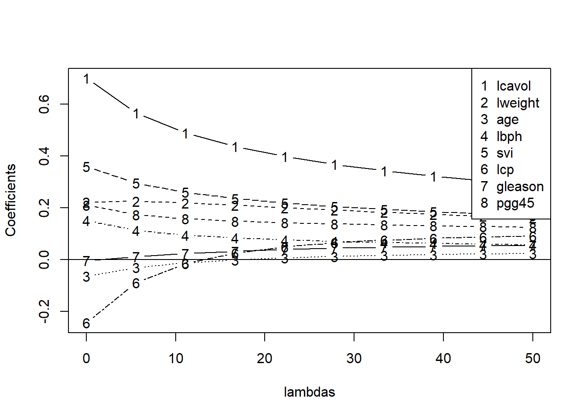
From the ridge coefficient paths, we see that as lambda rises (more penality being placed on coefficients), coefficients go towards zero. When lambda is zero, it is just the least square regression estimates.
\(\sum_{i=1}^N \left(y_i - \beta_0 - \sum_{j=1}^p x_{ij}\beta_j \right)^2\) subject to \(\sum_{j=1}^p |\beta_j| \leq s\)
It also has a lagrangian form:
\[ \sum_{i=1}^N \left(y_i - \beta_0 - \sum_{j=1}^p x_{ij}\beta_j \right)^2 + \lambda \sum_{j=1}^p |\beta_j|\] For orthonormal design matrices (not the norm!) this has a closed form solution:
\[\hat{\beta}_j = sign(\hat{\beta}_j^0)(|\hat{\beta}_j^0| - \gamma)^{+}\] Although the above result is not general, some prefer it because it helps with model selection when some \(\beta s\) are set to zero.
library(lars)## Loaded lars 1.2lasso.fit <- lars(as.matrix(x), y, type="lasso", trace=TRUE)## LASSO sequence
## Computing X'X .....
## LARS Step 1 : Variable 1 added
## LARS Step 2 : Variable 5 added
## LARS Step 3 : Variable 8 added
## LARS Step 4 : Variable 2 added
## LARS Step 5 : Variable 4 added
## LARS Step 6 : Variable 6 added
## LARS Step 7 : Variable 3 added
## LARS Step 8 : Variable 7 added
## Computing residuals, RSS etc .....plot(lasso.fit, breaks=FALSE)
legend("topleft", covnames, pch=8, lty=1:length(covnames), col=1:length(covnames))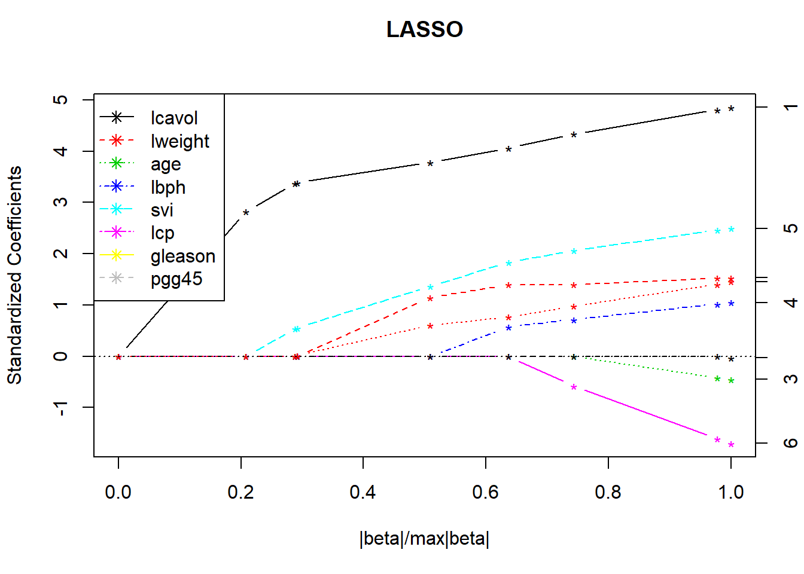
# this plots the cross validation curve
lasso.cv <- cv.lars(as.matrix(x), y, K=10, type="lasso", trace=TRUE)## LASSO sequence
## Computing X'X .....
## LARS Step 1 : Variable 1 added
## LARS Step 2 : Variable 5 added
## LARS Step 3 : Variable 8 added
## LARS Step 4 : Variable 2 added
## LARS Step 5 : Variable 4 added
## LARS Step 6 : Variable 3 added
## LARS Step 7 : Variable 6 added
## LARS Step 8 : Variable 7 added
## Lasso Step 9 : Variable 3 dropped
## LARS Step 10 : Variable 3 added
## Computing residuals, RSS etc .....
##
## CV Fold 1
##
## LASSO sequence
## Computing X'X .....
## LARS Step 1 : Variable 1 added
## LARS Step 2 : Variable 5 added
## LARS Step 3 : Variable 2 added
## LARS Step 4 : Variable 7 added
## LARS Step 5 : Variable 4 added
## LARS Step 6 : Variable 6 added
## LARS Step 7 : Variable 8 added
## LARS Step 8 : Variable 3 added
## Computing residuals, RSS etc .....
##
## CV Fold 2
##
## LASSO sequence
## Computing X'X .....
## LARS Step 1 : Variable 1 added
## LARS Step 2 : Variable 5 added
## LARS Step 3 : Variable 2 added
## LARS Step 4 : Variable 8 added
## LARS Step 5 : Variable 4 added
## LARS Step 6 : Variable 6 added
## LARS Step 7 : Variable 3 added
## LARS Step 8 : Variable 7 added
## Computing residuals, RSS etc .....
##
## CV Fold 3
##
## LASSO sequence
## Computing X'X .....
## LARS Step 1 : Variable 1 added
## LARS Step 2 : Variable 8 added
## LARS Step 3 : Variable 2 added
## LARS Step 4 : Variable 5 added
## LARS Step 5 : Variable 4 added
## LARS Step 6 : Variable 6 added
## LARS Step 7 : Variable 3 added
## LARS Step 8 : Variable 7 added
## Computing residuals, RSS etc .....
##
## CV Fold 4
##
## LASSO sequence
## Computing X'X .....
## LARS Step 1 : Variable 1 added
## LARS Step 2 : Variable 5 added
## LARS Step 3 : Variable 2 added
## LARS Step 4 : Variable 8 added
## LARS Step 5 : Variable 4 added
## LARS Step 6 : Variable 6 added
## LARS Step 7 : Variable 3 added
## LARS Step 8 : Variable 7 added
## Computing residuals, RSS etc .....
##
## CV Fold 5
##
## LASSO sequence
## Computing X'X .....
## LARS Step 1 : Variable 1 added
## LARS Step 2 : Variable 5 added
## LARS Step 3 : Variable 8 added
## LARS Step 4 : Variable 2 added
## LARS Step 5 : Variable 4 added
## LARS Step 6 : Variable 7 added
## LARS Step 7 : Variable 6 added
## LARS Step 8 : Variable 3 added
## Computing residuals, RSS etc .....
##
## CV Fold 6
##
## LASSO sequence
## Computing X'X .....
## LARS Step 1 : Variable 1 added
## LARS Step 2 : Variable 5 added
## LARS Step 3 : Variable 8 added
## LARS Step 4 : Variable 2 added
## LARS Step 5 : Variable 4 added
## LARS Step 6 : Variable 3 added
## LARS Step 7 : Variable 6 added
## LARS Step 8 : Variable 7 added
## Computing residuals, RSS etc .....
##
## CV Fold 7
##
## LASSO sequence
## Computing X'X .....
## LARS Step 1 : Variable 1 added
## LARS Step 2 : Variable 8 added
## LARS Step 3 : Variable 5 added
## LARS Step 4 : Variable 2 added
## LARS Step 5 : Variable 4 added
## LARS Step 6 : Variable 7 added
## LARS Step 7 : Variable 3 added
## LARS Step 8 : Variable 6 added
## Computing residuals, RSS etc .....
##
## CV Fold 8
##
## LASSO sequence
## Computing X'X .....
## LARS Step 1 : Variable 1 added
## LARS Step 2 : Variable 5 added
## LARS Step 3 : Variable 2 added
## LARS Step 4 : Variable 4 added
## LARS Step 5 : Variable 8 added
## LARS Step 6 : Variable 6 added
## LARS Step 7 : Variable 7 added
## LARS Step 8 : Variable 3 added
## Computing residuals, RSS etc .....
##
## CV Fold 9
##
## LASSO sequence
## Computing X'X .....
## LARS Step 1 : Variable 1 added
## LARS Step 2 : Variable 5 added
## LARS Step 3 : Variable 8 added
## LARS Step 4 : Variable 2 added
## LARS Step 5 : Variable 4 added
## LARS Step 6 : Variable 6 added
## LARS Step 7 : Variable 3 added
## LARS Step 8 : Variable 7 added
## Computing residuals, RSS etc .....
##
## CV Fold 10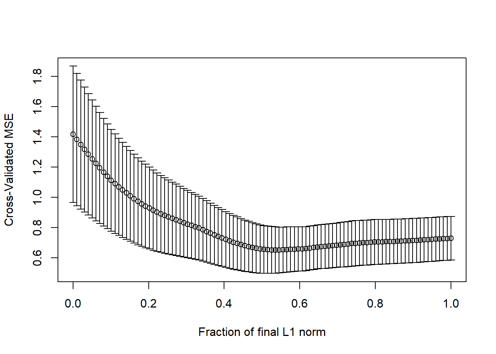
In caret package, the methods are ridge, lasso, relaxo.
Suppose we have 5 completely independent classifiers.
If accuracy is 70% for each:
\(10\times(0.7)^3(0.3)^2 + 5\times(0.7)^4(0.3)^2 + (0.7)^5\)
83.7% majority vote accuracy
Then, With 101 independent classifiers:
Model stacking (the focus of the section)
Model ensembling
library(ISLR); data(Wage); library(ggplot2); library(caret);
Wage <- subset(Wage,select=-c(logwage))
# Create a building data set and validation set
inBuild <- createDataPartition(y=Wage$wage, p=0.7, list=FALSE)
validation <- Wage[-inBuild,]; buildData <- Wage[inBuild,]
# Create both a training and test set with the building data set
inTrain <- createDataPartition(y=buildData$wage, p=0.7, list=FALSE)
training <- buildData[inTrain,]; testing <- buildData[-inTrain,]mod1 <- train(wage ~.,method="glm",data=training)
mod2 <- train(wage ~.,method="rf", data=training, trControl = trainControl(method="cv"), number=3)Two different classifiers: one is glm and the other is random forest.
pred1 <- predict(mod1,testing); pred2 <- predict(mod2,testing)## Warning in predict.lm(object, newdata, se.fit, scale = 1, type = if (type
## == : prediction from a rank-deficient fit may be misleadingqplot(pred1,pred2,colour=wage,data=testing)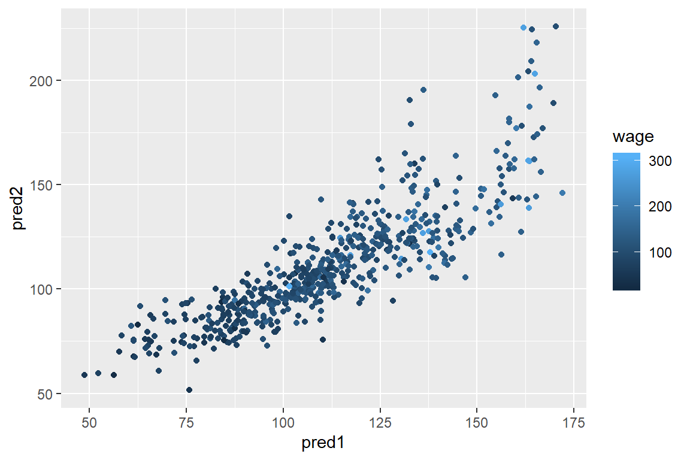
From the graph, you can see that they are close to one another, but not agree 100%.
#build a new dataset that uses the test dataset
predDF <- data.frame(pred1,pred2,wage=testing$wage)
combModFit <- train(wage ~.,method="gam",data=predDF)## Loading required package: mgcv## Loading required package: nlme## This is mgcv 1.8-28. For overview type 'help("mgcv-package")'.combPred <- predict(combModFit,predDF)sqrt(sum((pred1-testing$wage)^2))## [1] 856.8023sqrt(sum((pred2-testing$wage)^2))## [1] 919.4781sqrt(sum((combPred-testing$wage)^2))## [1] 854.6831Notice that the test set has been used to train the combined model and hence we need to do it on the new validation set (that’s why we need three datasets).
pred1V <- predict(mod1,validation); pred2V <- predict(mod2,validation)## Warning in predict.lm(object, newdata, se.fit, scale = 1, type = if (type
## == : prediction from a rank-deficient fit may be misleadingpredVDF <- data.frame(pred1=pred1V,pred2=pred2V)
combPredV <- predict(combModFit,predVDF)sqrt(sum((pred1V-validation$wage)^2))## [1] 1013.392sqrt(sum((pred2V-validation$wage)^2))## [1] 1045.807sqrt(sum((combPredV-validation$wage)^2))## [1] 1009.993The combined model has a lower error rate which shows model stacking improves accuracy.
Data are dependent over time and they have specific pattern types like trends(long term increase/decrease), seasonal patterns(patterns related to week, month, year etc.) and cycles(patterns that rise/fall periodically). Subsampling into training/test is more complicated.
Similar issues arise in spatial data.
Typically goal is to predict one or more observations into the future.
quantmodlibrary(quantmod)## Loading required package: xts## Registered S3 method overwritten by 'xts':
## method from
## as.zoo.xts zoo## Loading required package: TTR## Registered S3 method overwritten by 'quantmod':
## method from
## as.zoo.data.frame zoo## Version 0.4-0 included new data defaults. See ?getSymbols.##
## Attaching package: 'quantmod'## The following object is masked from 'package:Hmisc':
##
## Lagfrom.dat <- as.Date("01/01/08", format="%m/%d/%y")
to.dat <- as.Date("12/31/13", format="%m/%d/%y")
getSymbols("GOOG", src="yahoo", from = from.dat, to = to.dat)## 'getSymbols' currently uses auto.assign=TRUE by default, but will
## use auto.assign=FALSE in 0.5-0. You will still be able to use
## 'loadSymbols' to automatically load data. getOption("getSymbols.env")
## and getOption("getSymbols.auto.assign") will still be checked for
## alternate defaults.
##
## This message is shown once per session and may be disabled by setting
## options("getSymbols.warning4.0"=FALSE). See ?getSymbols for details.## [1] "GOOG"head(GOOG)## GOOG.Open GOOG.High GOOG.Low GOOG.Close GOOG.Volume
## 2008-01-02 345.1413 347.3829 337.5996 341.3157 8646000
## 2008-01-03 341.3505 342.1426 336.9969 341.3854 6529300
## 2008-01-04 338.5759 339.2086 326.2770 327.2733 10759700
## 2008-01-07 325.7490 329.9034 317.4850 323.4128 12854700
## 2008-01-08 325.2808 328.7478 314.3218 314.6606 10718100
## 2008-01-09 313.8436 325.4501 310.0927 325.3804 13529800
## GOOG.Adjusted
## 2008-01-02 341.3157
## 2008-01-03 341.3854
## 2008-01-04 327.2733
## 2008-01-07 323.4128
## 2008-01-08 314.6606
## 2008-01-09 325.3804require("forecast")## Loading required package: forecast## Registered S3 methods overwritten by 'forecast':
## method from
## fitted.fracdiff fracdiff
## residuals.fracdiff fracdiff##
## Attaching package: 'forecast'## The following object is masked from 'package:nlme':
##
## getResponsemGoog <- to.monthly(GOOG)
googOpen<-Op(mGoog) #take the opening price of Google
ts1 <- ts(googOpen,frequency=12) #specify it's time series and monthly data
plot(ts1,xlab="Years+1", ylab="GOOG")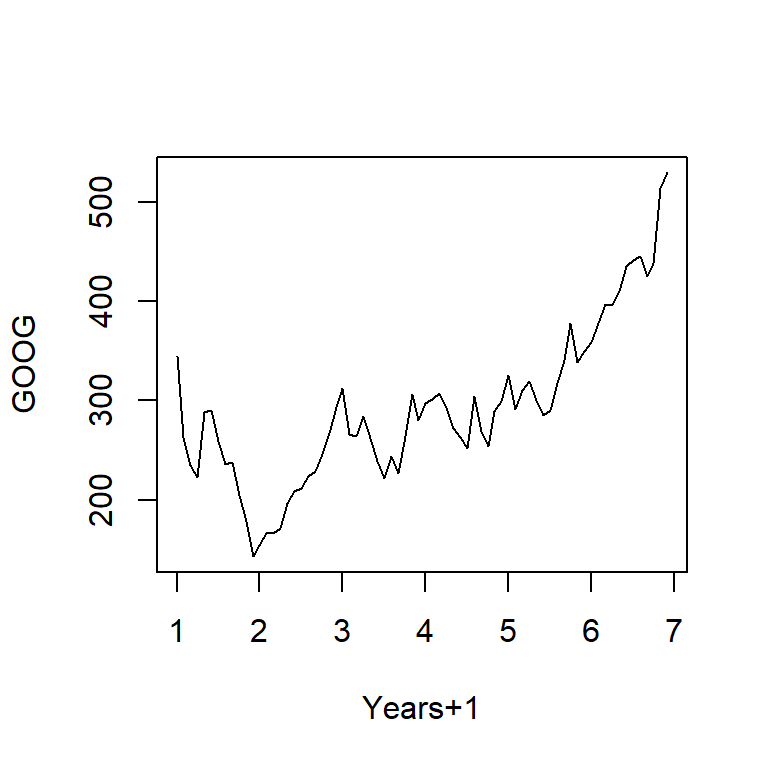
Trend - Consistently increasing pattern over time
Seasonal - When there is a pattern over a fixed period of time that recurs.
Cyclic - When data rises and falls over non fixed periods
https://www.otexts.org/fpp/6/1
#decompose into a series of patterns: trend, seasons and cycle
plot(decompose(ts1),xlab="Years+1")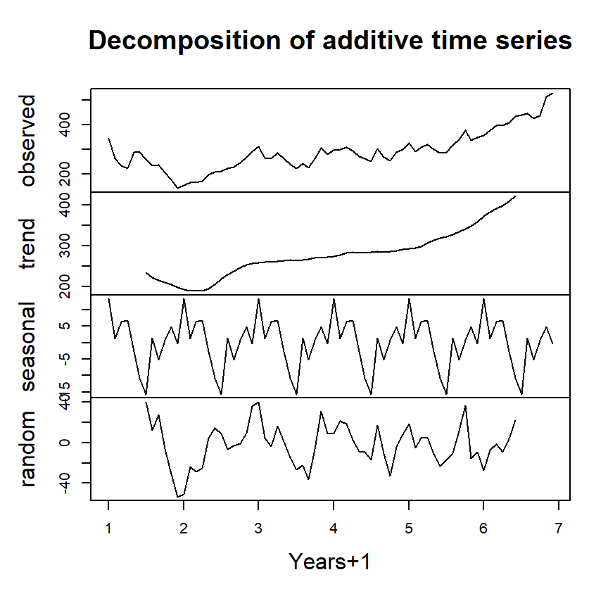
ts1Train <- window(ts1,start=1,end=5)
ts1Test <- window(ts1,start=5,end=(7-0.01))## Warning in window.default(x, ...): 'end' value not changedts1Train## Jan Feb Mar Apr May Jun Jul Aug
## 1 345.1413 263.3479 234.8746 223.0340 288.0752 290.1624 258.8199 235.3728
## 2 153.7238 166.5208 166.0426 171.2481 196.7774 208.5832 211.3080 223.5322
## 3 312.3044 266.3018 263.6119 284.6082 262.2670 239.3180 221.8136 243.5820
## 4 297.1263 301.1163 307.7365 293.2807 271.8311 263.0341 252.4239 304.4688
## 5 325.2509
## Sep Oct Nov Dec
## 1 237.4948 204.8073 178.1224 142.8047
## 2 228.9817 245.5795 267.5372 292.9669
## 3 226.6405 264.0104 306.7154 280.4488
## 4 269.3654 253.9731 288.9669 298.8797
## 5\[ Y_{t}=\frac{1}{2*k+1}\sum_{j=-k}^k {y_{t+j}}\]
plot(ts1Train)
lines(ma(ts1Train,order=3),col="red")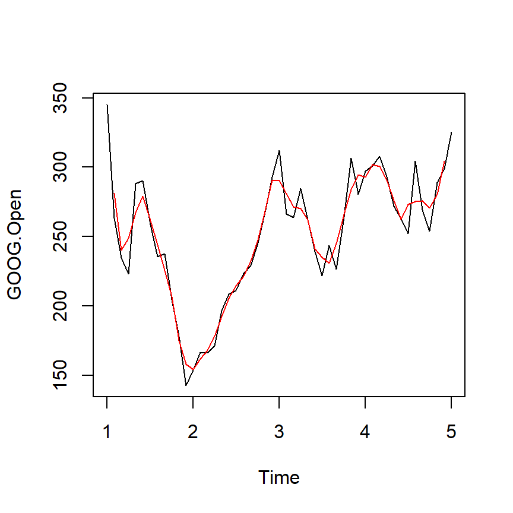
Example - simple exponential smoothing
\[\hat{y}_{t+1} = \alpha y_t + (1-\alpha)\hat{y}_{t-1}\]
ets1 <- ets(ts1Train,model="MMM") #first letter is error type; second letter denotes the trend type: monthly; third letter the season type; M = multiplicative
fcast <- forecast(ets1)
plot(fcast); lines(ts1Test,col="red")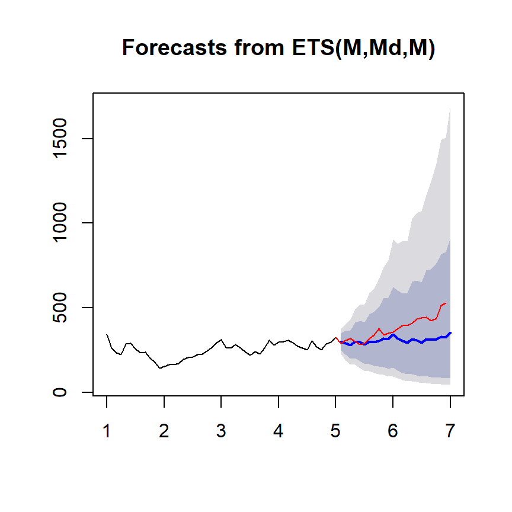
accuracy(fcast,ts1Test)## ME RMSE MAE MPE MAPE MASE
## Training set 0.2000302 26.09189 20.65928 -0.3572633 8.302526 0.3933832
## Test set 69.8911746 93.08104 72.04076 16.2879469 17.032408 1.3717625
## ACF1 Theil's U
## Training set -0.0002846501 NA
## Test set 0.7575349604 3.375609Forecasting and timeseries prediction is an entire field
Rob Hyndman’s Forecasting: principles and practice is a good place to start
Cautions:
Be wary of spurious correlations
Be careful how far you predict (extrapolation)
Be wary of dependencies over time
See quantmod or quandl packages for finance-related problems.
Sometimes you don’t know the labels for the outcome variable.
You will need to:
Create clusters (for example, use k-means)
Name the clusters (i.e. interpret your results from the previous step)
Build predictor for the clusters (build the model to explain; in previous problem, we know what we try to predict, so we are in this step right away)
In a new data set (test set or validation set)
Predict clusters
data(iris); library(ggplot2)
inTrain <- createDataPartition(y=iris$Species, p=0.7, list=FALSE)
training <- iris[inTrain,]; testing <- iris[-inTrain,]
dim(training); dim(testing)## [1] 105 5## [1] 45 5kMeans1 <- kmeans(subset(training,select=-c(Species)),centers=3)
training$clusters <- as.factor(kMeans1$cluster)
qplot(Petal.Width,Petal.Length,colour=clusters,data=training)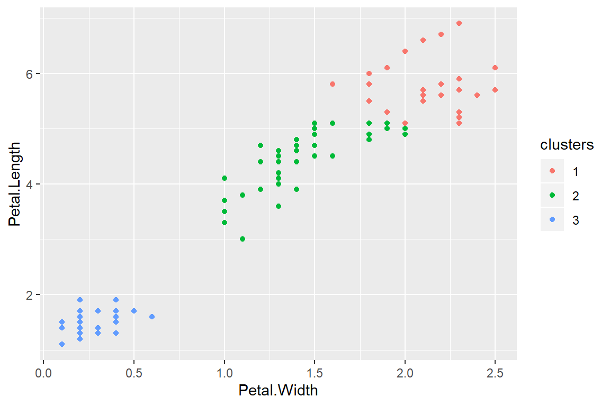
table(kMeans1$cluster,training$Species)##
## setosa versicolor virginica
## 1 0 2 26
## 2 0 33 9
## 3 35 0 0modFit <- train(clusters ~.,data=subset(training,select=-c(Species)),method="rpart")
table(predict(modFit,training),training$Species)##
## setosa versicolor virginica
## 1 0 0 24
## 2 0 35 11
## 3 35 0 0testClusterPred <- predict(modFit,testing)
table(testClusterPred ,testing$Species)##
## testClusterPred setosa versicolor virginica
## 1 0 0 10
## 2 0 15 5
## 3 15 0 0Copyright © 2019 Cathy Gao at cathygao.2019@outlook.com.